In this part of the project, we use the finite difference operator to take the gradient of the camerman image. Remember that the finite difference operator involves convolving the
input image with the row matrix dx = [[1, -1]] and the column matrix dy = [[1], [-1]] respectively
From the initial cameraman image above, the difference operator gives the output
shown below for Dx and Dy respectively.
Binarizing the image, we get the black and white outputs shown below as cameraman_bin_Dx and cameraman_bin_Dy respectively.
Taking the pixelwise norm of the binarized Dx and binarized Dy respectively, and then binarizing the result, we get the binarized output cameraman_bin_dXdy shown below. To a human,
it is possible to tell the subject from the edges, but there are many detected gradients present in the output that a human would not identify as significant, even with a high threshold for binarization.
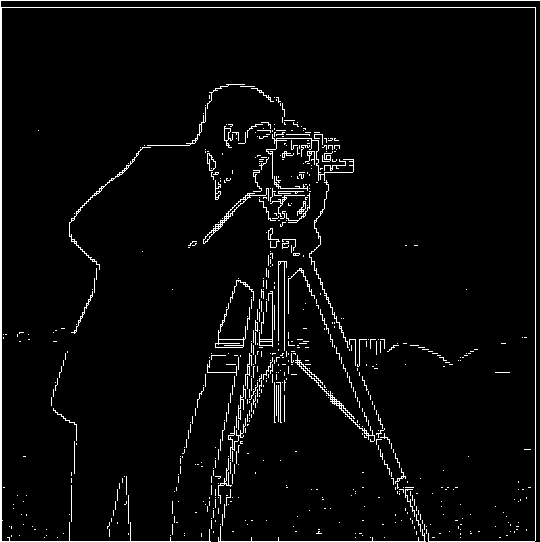
Notice that the ouptuts from the finite difference operator above, even binarized, contain a lot of noise and it's hard to identify continuous edges. To denoise the image,
we can use the Derivative of Gaussian filter to try and create a more continuous image.
In this part of the project, we take two separate approaches to denoising. First, we convolve the input cameraman image with a gaussian filter to subtract high frequencies and
apply the Finite Difference operator to the blurred image. The results for this technique are shown below.
The first pair of images below is the result of the dx and dy operator on the blurred image, respectively. The next pair is the binarized results, and the final pair is
the pixelwise norm of Dx and Dy and the binarised version of the pixelwise norm with filter at brightness 60 respectively.
In general, we can see that the edges are much more clearly defined if we take the gaussian blur as opposed to the naive difference operator.
The previous method of denoising involved two large convolutions: one convolution to gaussian blur the image, then one convolution for each operator dx and dy.
But convolutions are associative! so we should be able to save some computations by first convolving the gaussian filter with the dx and dy filters to get difference of gaussian filters DoGx and DoGy.
Using this technique, we ge the following results below: The first pair of images is the result of the DoGx and DoGy filters respectively. The next pair is the binarized version of the results of the filters,
and the final pair is the pixelwise norm of the DoGx and DoGy result and the binarized pixelwise norm of the pixelwise norm respectively
If you compare the results of the blurred difference operator and the DoG operator above, you can see they are the exact same! But for the DoG filter, we have to do much fewer computations!
In general, we can see that the edges are much more clearly defined if we take the gaussian blur as opposed to the naive difference operator.

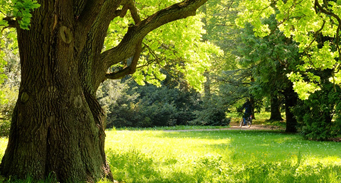
In this part of the project, we do the reverse of the previous section, where we wished to remove the high-frequency portions of our image. Here, we will amplify the high-frequency sections
to give the appearance of a higher-resolution image!
By adding the highest frequencies of our image to the original image, the image will appear to have more detail because the finer details will be exaggerated to greater extremes in the result.
By subtracting a blurred version (gaussian blur = low frequencies) from the original image, we can extract high frequencies.
Then, we can perform a weighted sum of these high frequencies with the image to exaggerate the finer details to a degree of our choosing
We can combine the convolution and subtraction into a single convolution by scaling the gaussian blur by -1 and adding 1 to the middle.
Then, we can combine this convolution with the weighted sum operation by scaling the convolution result by alpha and adding a 1 to the center of the convolution.
In this way, the entire process of sharpening has been combined into a single convolution operation, called the unsharp mask filter.
In the images below, we see a version of the taj mahal image with gaussian blur applied and the difference of this blur with the original, respectively.
By looking at the image represented by the difference of the original and blur, we see that the tree shaows and palace shadows have especially clear outlines. They will be sharper in the sharpened image.
The third image is a weighted sum (alpha = 0.75) of the original image (above) and the difference with the blurred image. You can see many high contrast areas stand out more than before.
We can apply the same sharpening process to the image of a tree, also seen above. The results are shown below. Again, small bright areas are much brighter than before, while small dark areas are much darker.
In particular, the tree trunk appears as if we're right next to it because the ridges stand out extremely clearly.
What happens if we sharpen an already sharp image? The results for both the taj mahal and the tree image are shown below. The images, especially the tree bark, appear more "knobbly" and rough than before as a result of the high-frequency magnification.
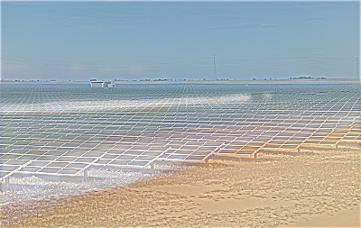 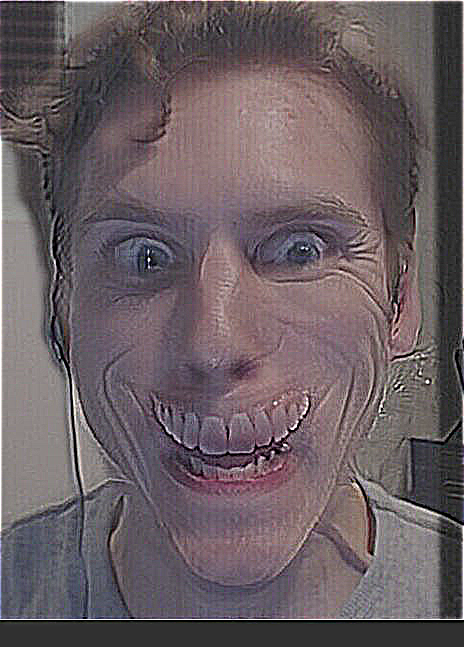
In this part of the project, we make hybrid images by combining the low-frequency part of one image with the high-frequency part of another!
To do this, we extract the low-frequency portion of the image we want to be visible from far away by taking the gaussian blur with some sigma.
We extract the high-frequency portion of the image we want to be visible from close up by taking the difference of the image and the gaussian blur with some sigma.
After aligning the images, we can overlay the high-frequency part of one and the low-frequency part of another. Because of the way the human eye filters, the image will take on properties of the low-frequency
section when viewed from far away and properties of the high-frequency part when viewed closeup.
Below, the process of creating a composite of a solar farm and a beach image. The first pair of images is the beach low-frequency and the farm high-frequency.
Averaging these images gives us the final image, the hybrid of the farm and beach
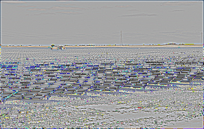
Below, the process of creating a composite of a smiling image and a frowning image. The first pair of images is the frown low-frequency and the smile high-frequency. horrifying!
Averaging these images gives us the final image, the hybrid of the smile and frown.
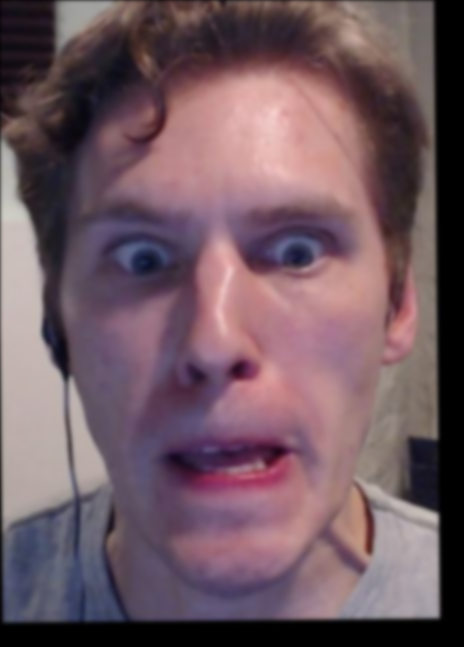 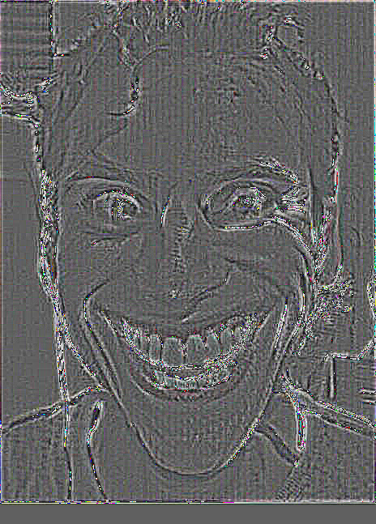
Merging crowd and field (Failure)
Below, the process of creating a composite of a crowd image and a field image. The first pair of images is the crowd low-frequency and the field high-frequency.
Averaging these images gives us the final image, the hybrid of the crowd and field.
I would consider this image composition a failure. One of the characteristics of a field is that it can be identified in low-frequency without paying much heed to the individual high-frequency details
Similarly, a crowd is generally distinguished by the high-frequency details much more than the low-frequency patterns. Therefore, this composition is in the opposite order that we would want for a
recognizable hybrid image.
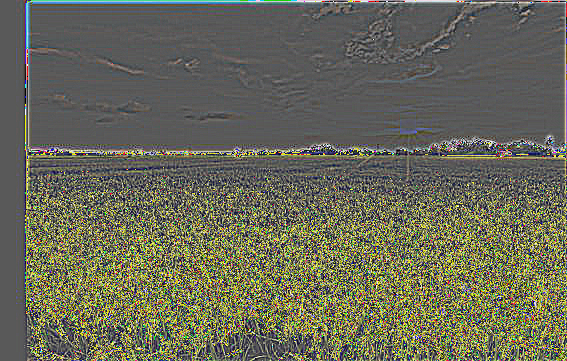
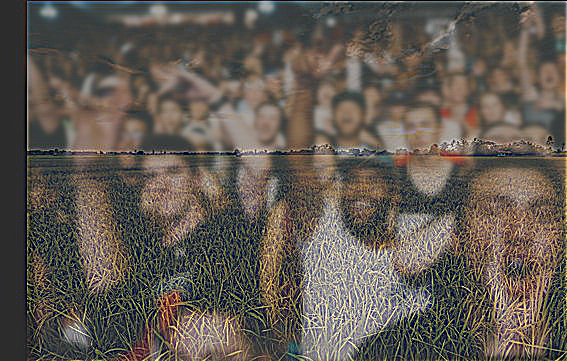
In this part of the project, we implement Gaussian and Laplacian stacks. A Gaussian stack is formed by repeatedly applying the Gaussian blur operator by convolving with the Gaussian kernel. A Laplacian Stack
is derived from the Gaussian stack of an image such that Laplaian_stack[i] = Gaussian_stack[i] - Gaussian_stack[i-1], and the last images are the same. Vectorized, we can represent this with the following code:
l_stack = (g_stack[:-1] - g_stack[1:]).append(g_stack[-1])
Below, the Gaussian stacks of size 6 and sigma=1 for apple.jpg and orange.jpg respectively, followed by their Laplacian stacks. Note that both the Gaussian and Laplacian stack contain all the information necessary to construct
any image in the other stack.
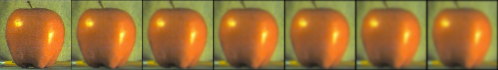
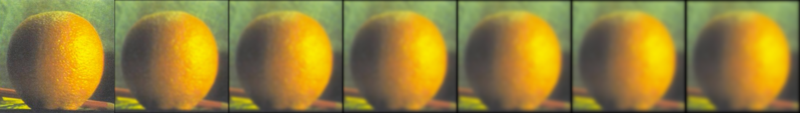
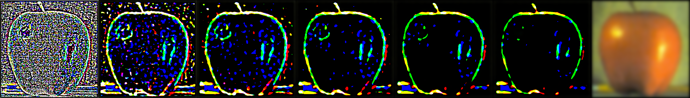
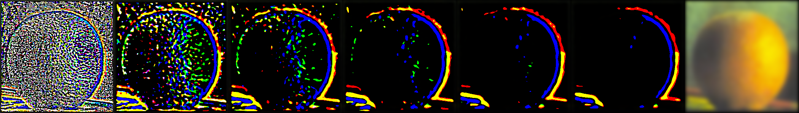
In this part of the project, we implement multiresolution blending. To blend two images together, we create a mask representing the blur position, then make a gaussian stack out of the mask.
To implement the blur, we multiply the laplacian stack value at one level of the first image by the mask stack value at that level,
multiply the laplacian stack value at one level of the first image by the inverse of the mask stack value at that level, then add them together. High frequency features will blend seamlessly, while
low-frequency features will separate sharply, creating a multiresolution blur effect.
Below, we show the final output of this implementation on apple.jpg and orange.jpg, along with the mask stack used in the transformation.
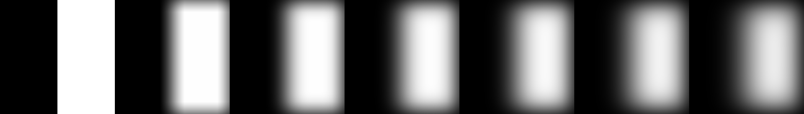
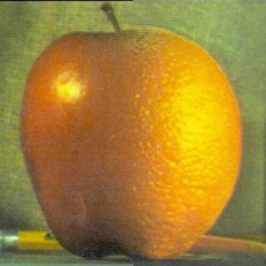